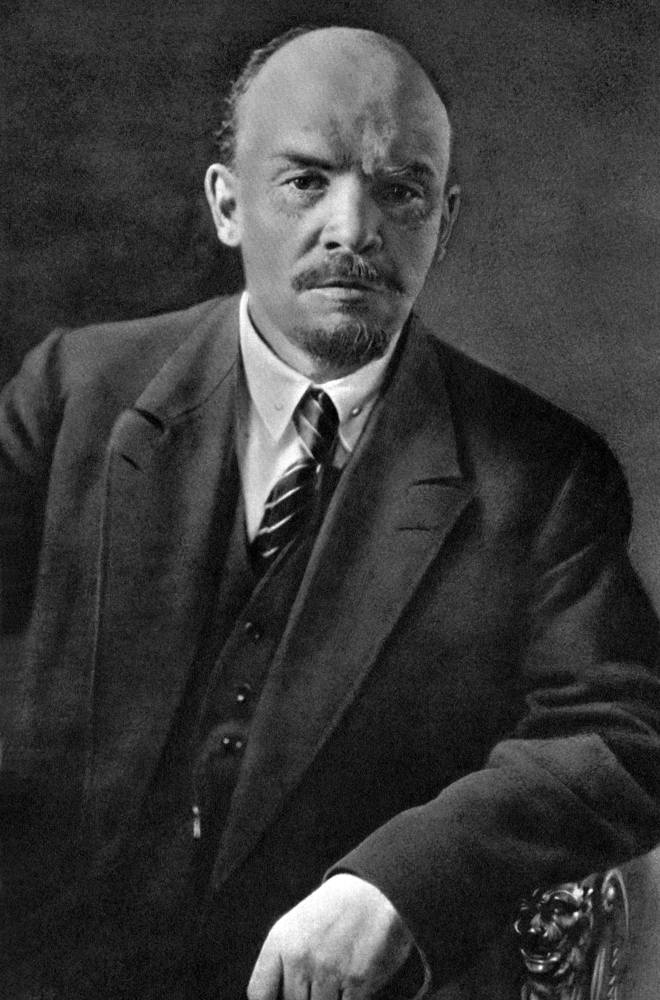
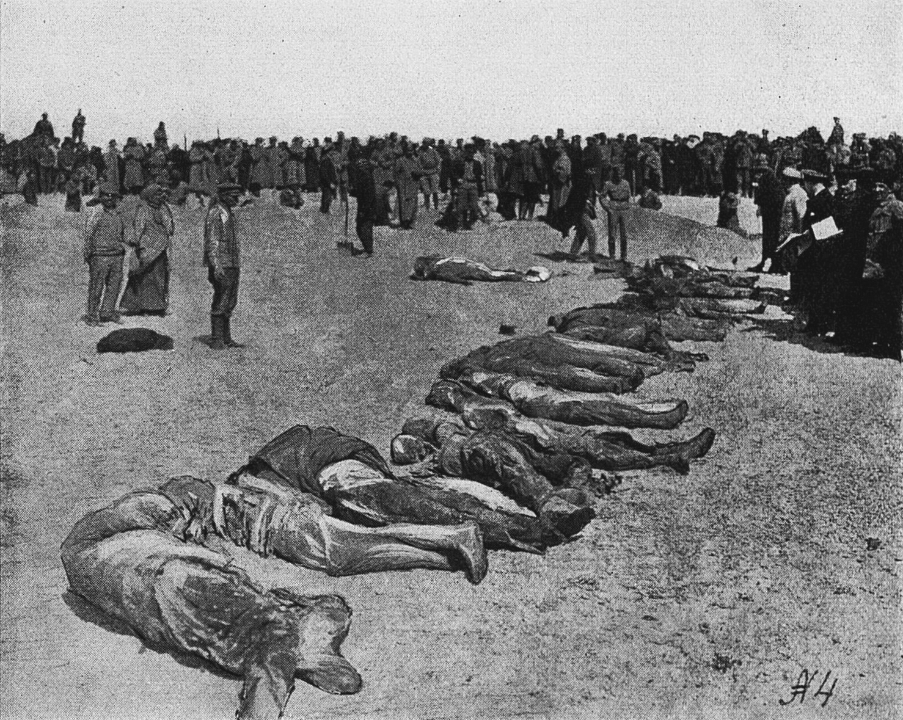
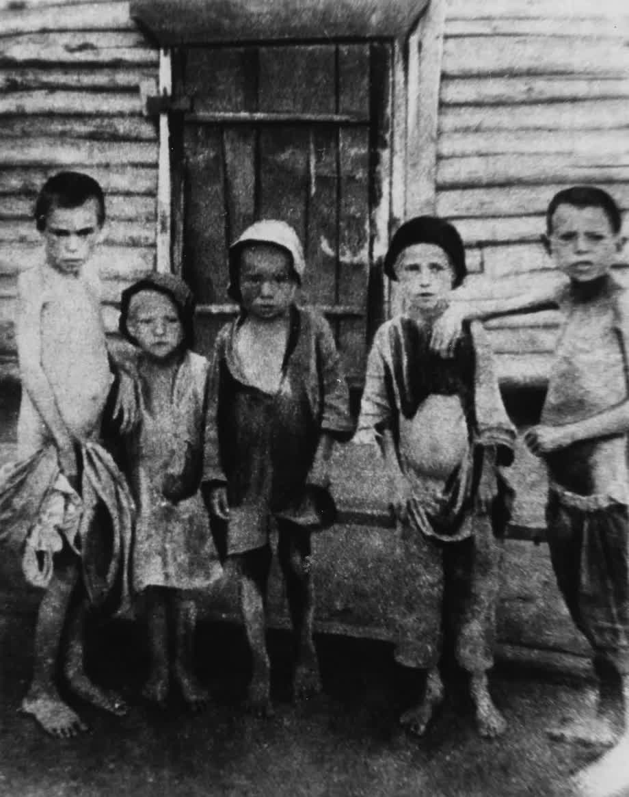
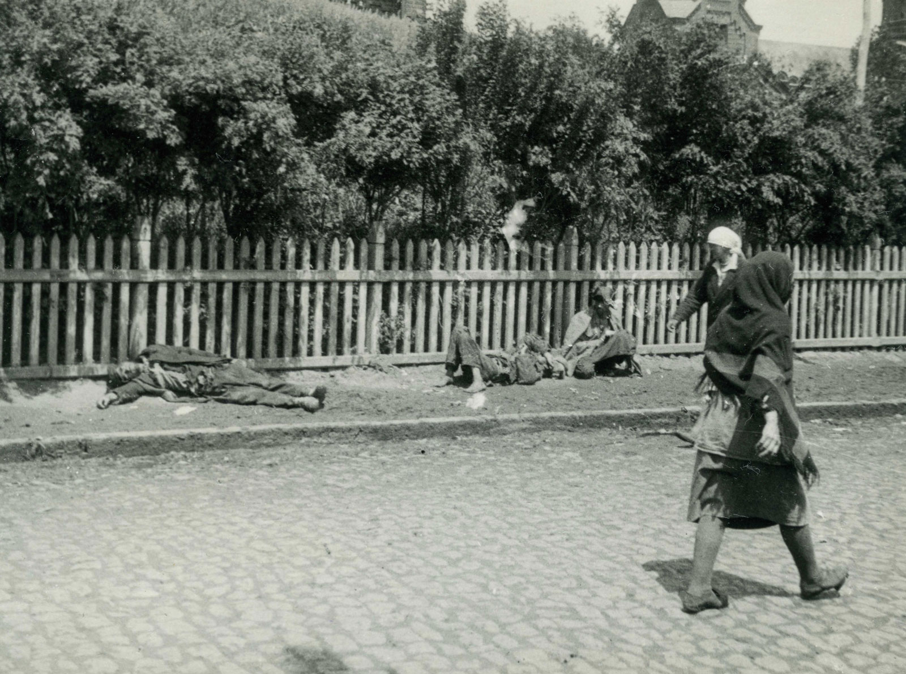
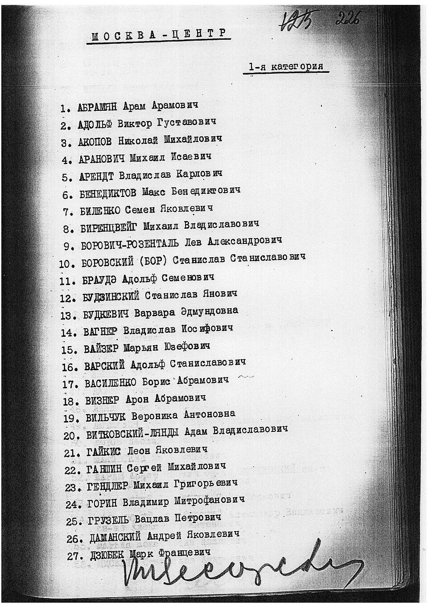
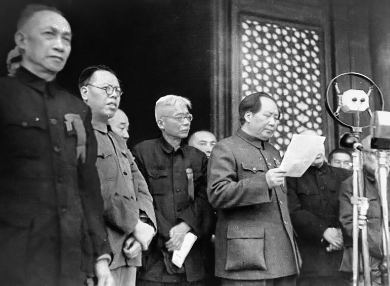
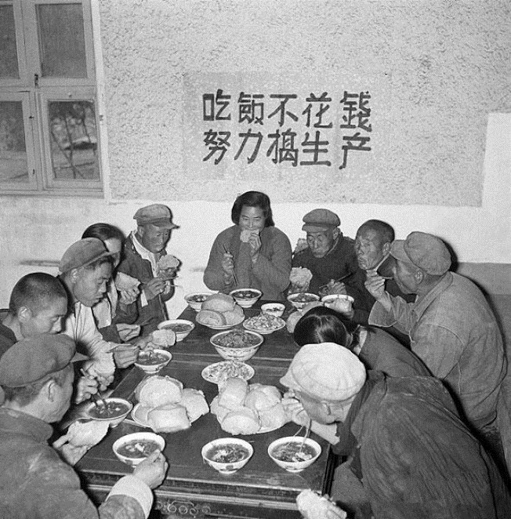
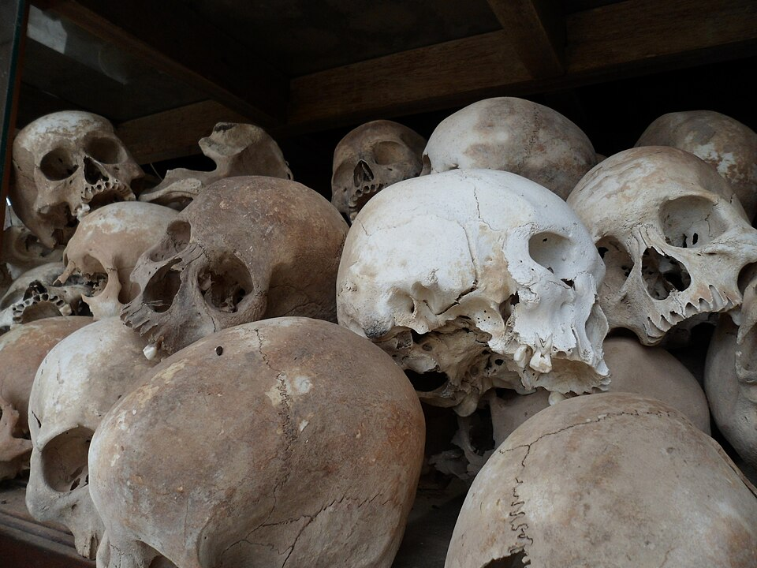

Communism
The Deadliest Ideology in Human History
1848–Present · 100 Million Dead · 33 Countries · Still Ongoing
~100 Million
Estimated total deaths (Black Book of Communism, 1997)
33
Countries that adopted communist governments
176 Years
Communist Manifesto (1848) to today
18 Million
Passed through Soviet Gulag camps alone
Death Toll by Regime
China — Mao Zedong
40–80 Million Dead
1949–1976 · The Great Helmsman
- Great Leap Forward (1959–62): 15–55 million starved — the largest famine in human history. Farmers were ordered to smelt steel instead of grow food. Grain was exported while people died. Local officials falsified production figures out of terror of Mao.
- Cultural Revolution (1966–76): 500,000–2 million killed directly. Red Guards terrorized teachers, doctors, and artists. Schools closed for years. Ancient temples, books, and cultural artifacts destroyed. Intellectuals "re-educated" through forced labor.
- Land Reform (1949–53): 1–2 million landlords and "class enemies" executed in public struggle sessions before cheering crowds.
Soviet Union — Stalin (Stalinist Era)
6–20 Million Dead (Stalinist era alone)
1924–1953 · Man of Steel
- Great Purge (1936–38): 680,000–1.2 million executed. Stalin signed approximately 40,000 death warrants personally. Party members, military officers, intellectuals — anyone who could threaten his power.
- Holodomor / Soviet Famine (1932–33): 3.5–7.5 million Ukrainians deliberately starved. Grain was seized at gunpoint while peasants died in their homes. Classified as genocide by 33 nations.
- Gulag System (1918–1956): 1.5–1.8 million deaths in labor camps. 18 million total passed through.
- Dekulakization (1929–33): 1.5–2 million "kulaks" (prosperous peasants) killed or deported to Siberia to die.
- Red Terror (1918–22): 100,000–500,000 executed by Cheka secret police.
Cambodia — Pol Pot / Khmer Rouge
1.5–2 Million Dead
1975–1979 · 25% of the Entire Population
- "Year Zero" 1975: Cities emptied at gunpoint. 2 million Phnom Penh residents forced onto death marches into the countryside with no food or medicine.
- Wearing glasses could get you killed — it implied education, which implied being an enemy of the people.
- S-21 Tuol Sleng prison: 14,000+ documented prisoners. Only 7 survived. Meticulous records of torture and execution were kept.
- The Killing Fields: Mass graves across Cambodia. Skulls and bones are still unearthed today.
- In just 4 years, 25% of the entire Cambodian population was exterminated.
North Korea — Kim Dynasty
1–3 Million Dead (Ongoing)
1948–Present · The Hermit Kingdom
- 1990s Famine: 600,000–3.5 million starved while Kim Jong-il spent hundreds of millions building nuclear weapons and maintaining his court.
- Political prison camps (kwanliso): 80,000–120,000 prisoners today, including children, grandchildren, and grandparents of the accused. Multi-generational imprisonment for a single family member's "crime."
- Three generations of Kim dictatorship — the most totalitarian state in human history.
- 0 free press. 0 public internet. 0 religious freedom. 0 political parties. 0 freedom of movement.
Soviet Union — Full Scope
20–62 Million Dead (R.J. Rummel Estimate)
1917–1991 · Lenin Through Gorbachev
- Including all Lenin, Stalin, and post-Stalin period deaths across 74 years of Soviet rule.
- Entire nationalities forcibly deported: Chechens, Volga Germans, Crimean Tatars, Koreans, Kalmyks — millions moved to die in Central Asia and Siberia.
- R.J. Rummel's total Soviet democide estimate: 61.9 million human beings.
- The Soviet Union was the single largest killing machine in human history by absolute numbers.
Vietnam
1–2 Million Dead
1975–Present · After Saigon's Fall
- Re-education camps: 1–2.5 million imprisoned after 1975. An estimated 200,000–400,000 died in the camps from starvation, disease, and execution.
- The Boat People: Over 800,000 fled by sea after unification. An estimated 200,000–400,000 drowned or were killed by pirates in the South China Sea.
- Land reform executions: 50,000–172,000 "landlords" and class enemies executed in the North in the early 1950s.
Ethiopia — Derg / Mengistu
500,000–2 Million Dead
1974–1991 · The Red Terror
- Red Terror (1977–78): 500,000 killed, including children. Bodies left in streets with signs reading "counter-revolutionary." Families were charged for the bullet used to execute their relatives before they could collect the body.
- Forced collectivization destroyed agricultural production and caused a famine that killed hundreds of thousands — then featured in the 1984–85 famine visible to the world.
- Mengistu fled to Zimbabwe in 1991 and lives there today, protected by Robert Mugabe's successor.
Eastern Europe, Cuba & Others
Hundreds of Thousands
1945–1991 · The Soviet Bloc
- Romania (Ceaușescu): ~200,000 political prisoners. Systematic torture. Banned contraception; unwanted children warehoused in horrific orphanages.
- Cuba (Castro): 78,000–141,000 deaths attributed to the regime. 1.4 million Cubans have fled the island since 1959.
- Yugoslavia, Poland, Hungary, East Germany: Political executions, gulags, secret police networks spanning 45 years.
- Angola, Mozambique, Ethiopia: Millions dead in communist proxy wars fueled by Soviet weapons and Cuban troops.
Ideology
"What Communism Promised — What It Delivered"
The Core Promise
Marx & Engels, 1848
The Promise
"From each according to his ability, to each according to his needs."
Central planners had no mechanism to determine needs or abilities across hundreds of millions of people. The result everywhere was universal scarcity, a black market for everything, and starvation for those at the bottom of the party hierarchy.
Abolition of Private Property
Das Kapital, Marx, 1867
The Promise
"Abolition of private property will liberate the workers from exploitation."
When individuals own nothing, the state owns everything — and the state is controlled by whoever seized power through violence. The workers became serfs of the party, owning less than feudal peasants.
The Withering State
Lenin, The State and Revolution, 1917
The Promise
"The state will wither away once class enemies are eliminated."
Every communist state became MORE totalitarian over time, not less. The Soviet state in 1950 was incomparably more powerful than in 1920. The state never withered — it grew into the most powerful coercive apparatus in human history.
Workers' Paradise
End of Exploitation
The Promise
"Workers will own the means of production and be free from exploitation."
Workers were paid starvation wages set by the state, forbidden to strike (strikes were "counter-revolutionary"), assigned jobs by party decree, and shot for leaving their posts or factories. Slavery with a red flag and a party card.
Historical Inevitability
Scientific Socialism
The Promise
"Communism is the inevitable endpoint of historical progress — a scientific law."
The "scientific socialism" of Marx was pseudoscience dressed in economic jargon. Capitalism adapted, reformed, and improved the lives of billions. Communism collapsed everywhere it was tried — not once, but thirty-three times.
Equality for All
The Classless Society
The Promise
"Communism will create a classless society — true equality for every person."
A rigid new class system formed within years of every revolution: the nomenklatura (party apparatchiks) lived in luxury dachas with foreign goods while workers stood in bread lines. As Orwell put it: "All animals are equal, but some animals are more equal than others."
Key Texts
The Communist Manifesto
Marx & Engels, 1848
Marx & Engels, 1848
"A spectre is haunting Europe — the spectre of communism." The foundational text calling workers of the world to unite, abolish private property, and seize power. Written in two weeks. Responsible for more deaths than any document in history.
Das Kapital
Marx, 1867
Marx, 1867
The academic foundation: labor theory of value, surplus value, inevitable collapse of capitalism. Marx's analysis of capitalism was often acute; his prescription was catastrophic. The labor theory of value was already being refuted by economists as he wrote it.
What Is to Be Done?
Lenin, 1902
Lenin, 1902
Lenin's blueprint for a small, disciplined "vanguard party" of professional revolutionaries who would lead the masses to revolution. The theoretical justification for one-party totalitarian rule — the masses could not be trusted to achieve revolution on their own.
The State and Revolution
Lenin, 1917
Lenin, 1917
Written in hiding in 1917, this text justified seizing state power by any means. The "dictatorship of the proletariat" would temporarily use state violence to crush resistance — after which the state would wither away. It never did.
Quotations from Chairman Mao (Little Red Book)
Mao Zedong, 1964
Mao Zedong, 1964
"Political power grows out of the barrel of a gun." The cult-of-personality text waved by Red Guards as they beat teachers and professors to death. A billion copies printed. Required memorization under penalty of labor camp.
"The Communists disdain to conceal their views and aims. They openly declare that their ends can only be attained by the forcible overthrow of all existing social conditions."
— Karl Marx & Friedrich Engels, The Communist Manifesto, 1848
Key Leaders
Karl Marx
1818–1883 · German Philosopher
Never worked a factory job in his life. Wrote the Communist Manifesto and Das Kapital from the reading room of the British Museum library, largely funded by his friend Engels. Died in obscurity in London in 1883. His ideas would kill approximately 100 million people in the century after his death. He never saw any of it.
Vladimir Lenin
1870–1924 · First Soviet Dictator
Created the first communist state. Immediately established the Cheka secret police — predecessor to the GPU, NKVD, and KGB. Launched the Red Terror in 1918. Imposed forced grain requisitions that caused the 1921 famine, killing 5 million. Died of strokes, possibly complicated by syphilis. His last writings expressed alarm about Stalin's cruelty — but it was already too late. His embalmed body still lies on public display in Red Square.
Joseph Stalin
1878–1953 · Soviet Dictator, 1924–1953
Ordered the Gulag, the Holodomor, and the Great Purge. Signed approximately 40,000 death warrants personally — often with notes like "beat, beat, beat." Had Leon Trotsky murdered with an ice pick in Mexico City in 1940. Killed more Soviet citizens than Hitler killed on the Eastern Front. Survived the Second World War and died peacefully in his bed in 1953, possibly murdered by his own inner circle. Was never tried for anything.
Mao Zedong
1893–1976 · Chairman of the PRC
The man who killed more human beings than any individual in recorded history. The Great Leap Forward alone killed between 15 and 55 million people in four years. Never expressed remorse. Once stated that nuclear war would be acceptable because China had enough people to survive and rebuild. Continues to be worshipped by millions in China today. His portrait hangs over Tiananmen Square.
Pol Pot (Saloth Sar)
1925–1998 · Khmer Rouge Leader
Educated at the Sorbonne in Paris, returned to Cambodia to implement the most radical communist program ever attempted: "Year Zero." Killed 25% of his own country's population in four years — the most lethal genocide per capita in the 20th century. The only communist leader to exterminate a full quarter of his nation. Died under house arrest in 1998, never tried for genocide. His captors feared the trial would embarrass too many people.
Kim Il-sung
1912–1994 · Founder of North Korea
Founded North Korea and created the world's most totalitarian system from scratch. Established a personality cult declaring himself a god, with his birth mythologized with supernatural events. His dynasty — son Kim Jong-il, grandson Kim Jong-un — continues today. North Korea is the world's only hereditary communist dictatorship, now in its third generation. The cult shows no signs of ending.
Fidel Castro
1926–2016 · Ruler of Cuba, 1959–2008
Ruled Cuba for nearly 60 years. Executed thousands after seizing power, imprisoned hundreds of thousands in forced labor camps. 1.4 million Cubans — out of a population of 6 million in 1959 — eventually fled the country rather than live under his rule. Turned what had been the wealthiest nation in the Caribbean into a poverty museum. Was championed throughout his life by Western intellectuals who never had to live there.
Nicolae Ceaușescu
1918–1989 · Romanian Dictator
Banned contraception to increase the Romanian population by decree; hundreds of thousands of unwanted children were dumped in horrific state orphanages. His secret police (Securitate) maintained 1 informant for every 30 Romanian citizens — among the highest surveillance ratios in history. Executed by firing squad on Christmas Day 1989, after a 2-hour show trial. The crowds that had cheered for him for 25 years cheered his death just as loudly.
Communist Regimes
Soviet Union
1917–1991 · 74 Years
15 republics. 280 million people at peak. Spawned the global communist movement, armed and supported communist revolutions on every continent, fought and won the Second World War at catastrophic human cost, and then spent 45 years in nuclear standoff with the West.
Deaths attributed20–62 million
Key atrocityHolodomor, Great Purge, Gulag
Final fateCollapsed economically 1991; Gorbachev's reforms accidentally ended it
People's Republic of China
1949–Present · Still Ongoing
1.4 billion people. The world's largest communist state by population and the world's second-largest economy. Has evolved into authoritarian state capitalism while retaining one-party communist rule, censorship, political imprisonment, and territorial expansionism.
Deaths attributed40–80 million (Maoist era)
Key atrocityGreat Leap Forward, Cultural Revolution, Tiananmen
Final fateOngoing — party still in power
Cambodia / Khmer Rouge
1975–1979 · 4 Years
The most concentrated genocide in modern history relative to population size. A country of 8 million people lost 1.5–2 million in four years. Cities were emptied. Literacy was a death sentence. The calendar was reset to "Year Zero." Ended only when Vietnam invaded.
Deaths attributed1.5–2 million (25% of population)
Key atrocityYear Zero, Killing Fields, S-21
Final fateEnded by Vietnamese invasion, 1979
North Korea (DPRK)
1948–Present · Still Ongoing
The most isolated country on Earth. 25 million people with no access to the outside world. Nuclear weapons program maintained at the cost of mass starvation. The ruling Kim family is worshipped as literal gods through mandatory state religion disguised as political ideology.
Deaths attributed1–3 million
Key atrocity1990s famine, political prison camps
Final fateOngoing — Kim Jong-un rules today
Cuba
1959–Present · 66 Years Ongoing
Once the wealthiest country in the Caribbean with a higher GDP per capita than Spain. Today: widespread poverty, food rationing, zero political freedom, and a mass exodus that has not stopped in 65 years. The Cuban government survives by imprisoning dissidents and controlling all information.
Deaths attributed78,000–141,000
Key atrocityExecutions, forced labor camps, mass exile
Final fateOngoing — Díaz-Canel rules today
Vietnam
1975–Present · Still Ongoing
Nominally communist with an increasingly capitalist economy (Doi Moi reforms, 1986), but political repression, one-party rule, and imprisonment of dissidents continue. The Vietnamese Communist Party maintains a monopoly on power while allowing market forces that would horrify Marx.
Deaths attributed1–2 million (post-1975)
Key atrocityRe-education camps, Boat People exodus
Final fateOngoing — Vietnamese Communist Party rules today
The Gulag
The Soviet system of forced labor camps — 476 individual facilities, operating 1918–1987
18 Million
Total passed through the Gulag
476
Individual camp complexes
1.8 Million
Peak population (1953)
1.5–1.8M
Deaths recorded in camps
Timeline of the Gulag
1918
First Camps Established
Lenin and the Cheka establish the first "concentration camps" for class enemies, counter-revolutionaries, and anyone who resisted grain requisitions. The Bolsheviks use the term "concentration camp" without shame.
1930
GULAG Formalized Under Stalin
Stalin vastly expands the system. The Main Camp Administration (GULAG — Glavnoye Upravleniye Lagerey) is formalized as a branch of the secret police. Forced labor becomes integral to Soviet industrial production — the White Sea Canal is built entirely by prisoner labor.
1932–33
Holodomor — Camps Fill
The Holodomor deliberately starves Ukraine. Peasants who resist grain confiscation are arrested and sent to camps, many already weak from starvation. Camp mortality reaches catastrophic levels as the food supply for prisoners collapses alongside the wider famine.
1937–38
The Great Purge
Mass arrests fill the camps beyond capacity. Stalin's Great Terror sweeps up party members, military officers, factory managers, intellectuals, and their families. Approximately 750,000 are shot outright; hundreds of thousands more die in the camps during this period.
1940
Katyn Massacre
22,000 Polish military officers, police, intellectuals, and professionals are executed in Gulag forests on Stalin's direct order, primarily at Katyn Forest. The USSR denied responsibility until 1990. The cover-up held for 50 years — the Nuremberg tribunal refused to indict the Soviets for Katyn for political reasons.
1953
Stalin Dies — Peak and Turn
Stalin dies in March 1953. At the moment of his death, the Gulag holds approximately 1.8 million prisoners. Gradual releases begin almost immediately as his successors dismantle the most extreme apparatus of terror.
1956
Khrushchev's "Secret Speech"
Nikita Khrushchev's "On the Cult of Personality" speech to the 20th Party Congress denounces Stalin's crimes to a stunned audience of Communist Party members. The speech is "secret" but leaks almost immediately. The Gulag system begins to be dismantled, though camps continue operating until the late 1980s.
Camp Life & Notable Sites
Daily Life in the Gulag
Standard Conditions
10–12 hours of hard labor daily in extreme cold (Siberia, -40°C in winter). A food ration of 400–800g of bread per day — reduced further if quotas were not met. No warm clothing issued to replace what wore out. Prisoners slept 20–40 to a barracks. Disease — scurvy, pellagra, typhus — was endemic. A prisoner who fell ill lost their food ration.
Kolyma
The Arctic Auschwitz · Soviet Far East
The most feared Gulag complex — gold and uranium mining in the Magadan region, where winter temperatures reach -60°C. Thousands froze to death or died in the mines. The permafrost preserved bodies for decades — Soviet construction workers in the 1980s frequently unearthed mass graves. Survivors called it "the Arctic Auschwitz."
Vorkuta
Coal Mines Above the Arctic Circle
Coal mining above the Arctic Circle in the Komi Republic. Temperatures fell to -50°C. Prisoners worked in the mines until they died, were replaced by the next transport. A massive prisoner uprising in 1953 was suppressed by Soviet troops. The city of Vorkuta still exists today, built entirely on the bones of Gulag prisoners.
Aleksandr Solzhenitsyn
Nobel Prize for Literature, 1970
Arrested in 1945 for writing a letter mildly critical of Stalin. Served 8 years in the Gulag. His three-volume "The Gulag Archipelago" (1973), smuggled out to the West, exposed the system to the world in meticulous, unflinching detail. The Soviet government expelled him from the USSR in 1974. His testimony is the definitive account of the system. He called it "an abyss of inhumanity."
"The Gulag Archipelago was not a detention system but a murder machine, a machine for destroying people, which — given a few decades — would have destroyed the Russian people themselves."
— Aleksandr Solzhenitsyn, The Gulag Archipelago, 1973
Timeline: Communism in History
1848
Communist Manifesto Published
"Workers of the world, unite!" Marx and Engels publish their 23-page pamphlet in London. It sells poorly. Marx lives on Engels's charity for the rest of his life.
1917
Bolshevik Revolution
Lenin's Bolsheviks seize the Winter Palace in Petrograd in October. The world's first communist state is born. Within weeks, press censorship is imposed and opposition parties are banned. The Cheka secret police is established within two months.

1918–22
Red Terror
The Cheka executes 100,000–500,000 "class enemies," clergy, aristocrats, and political opponents. Lenin writes explicit orders for mass executions and hostage-taking. The pattern for all future communist states is established.

1921
Soviet Famine
Forced grain requisitions cause a massive famine — 5 million dead. Lenin accepts Western food aid from Herbert Hoover's American Relief Administration. He privately notes that the famine usefully weakened the peasants' will to resist.

1932–33
Holodomor
Stalin deliberately starves Ukraine: 3.5–7.5 million dead. Grain is seized at gunpoint, borders are sealed, and anyone caught eating from the fields they farmed is shot. Recognized as genocide by 33 nations. The Soviet government denied it until 1990.

1936–38
The Great Purge
Stalin's Great Terror: 750,000+ executed. The entire senior leadership of the Red Army is destroyed — 3 of 5 marshals, 13 of 15 army commanders shot. This nearly costs the USSR the Second World War. Stalin signs the death warrants personally.

1949
Mao Wins China
"The Chinese people have stood up!" Mao proclaims the People's Republic from Tiananmen Gate. Land reform begins immediately — 1–2 million "landlords" are executed in public. The most populous nation on Earth falls under communist rule.

1953
Stalin Dies; Multiple Crises
Stalin dies in March. East German workers rise up in June — crushed by Soviet tanks. Korean War armistice signed in July after 3 million deaths. Khrushchev begins cautious de-Stalinization.
1956
Hungary — Soviet Tanks
Hungarian uprising: citizens tear down Stalin's statue in Budapest, demand freedom. Soviet tanks crush the revolt. 2,500–3,000 Hungarians killed. 200,000 flee to the West. Western communist parties hemorrhage members. The illusion of "reform communism" is shattered.
1958–62
The Great Leap Forward
Mao's catastrophic industrialization campaign: 15–55 million starved to death in the largest famine in human history. Local officials report impossible grain yields to avoid punishment; the state exports food while the countryside starves. Mao is aware and does nothing.

1975
Three Communist Victories
Saigon falls to North Vietnam (April 30). Cambodia falls to the Khmer Rouge (April 17) — Year Zero begins within days. Laos falls to the Pathet Lao (December). In one year, three more nations fall under communist rule.

1989
The Wall Falls — and Tiananmen
June 4: Tiananmen Square massacre — China's communist government kills hundreds to thousands of pro-democracy protesters. November 9: the Berlin Wall falls as communist governments across Eastern Europe collapse in weeks. December 25: Ceaușescu executed. The Soviet empire in Europe is gone in a single year.
1991
The Soviet Union Dissolves
December 25, 1991: Mikhail Gorbachev resigns as the Soviet flag is lowered over the Kremlin for the last time. 74 years. Approximately 100 million dead across all communist regimes. The Cold War is over. China, North Korea, Cuba, Vietnam, and Laos remain communist.
2024
Communism Continues
China (1.4 billion), North Korea (25 million), Cuba (11 million), Vietnam (98 million), and Laos (7 million) remain under communist one-party rule. China's Communist Party is the largest and most powerful authoritarian government in human history.
Death Counter
Estimated deaths under communist regimes — Black Book of Communism, Courtois et al., 1997
"Power is not a means; it is an end. One does not establish a dictatorship in order to safeguard a revolution; one makes the revolution in order to establish the dictatorship."
— George Orwell, Nineteen Eighty-Four, 1949